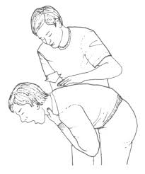
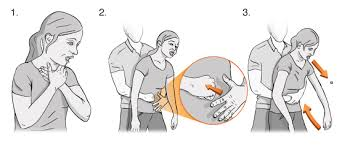

Choking, Airway Obstruction
Treatment
Partial Obstruction with Good Air Exchange

- Encourage victim to cough as long as good air exchange continues.
- DO NOT interfere with attempts to expel object
Partial or Complete Airway Obstruction
in Conscious Victim with Poor Air Exchange

- For Adult Victim: victim is sitting or standing
- Stand slightly behind victim.
- Place your arms around victim's waist;
place your fist, thumb side in, against victim's abdomen, slightly above the navel and below the rib margins
- Grasp fist with your other hand and exert a quick upward thrust:
Repeat (five times in a rapid succession) if necessary
Complete Airway Obstruction in Unconscious Victim
Follow breathing Problems